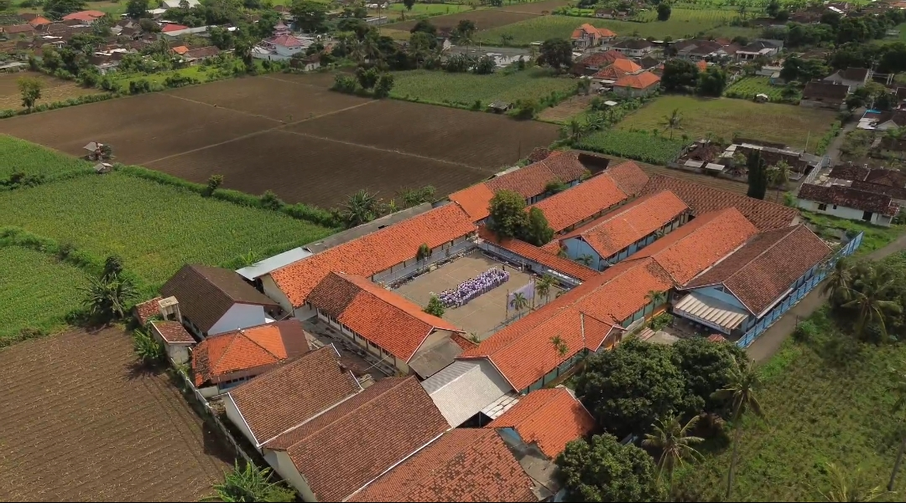
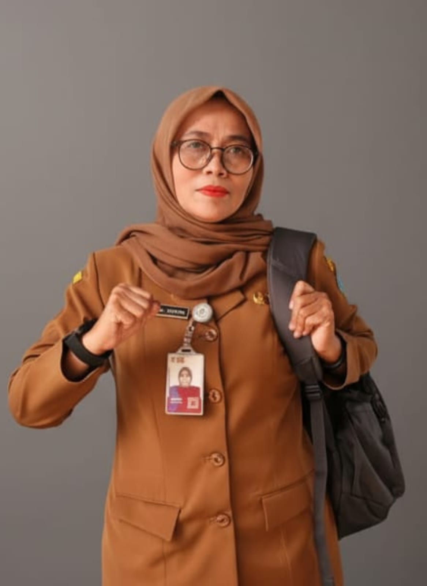

Selamat Datang Adik-Adik Kelas 9 SMPN 1 Wongsorejo di SMAN 1 Wongsorejo!
"Kenali Lebih Dekat Kampus SMANJO: Tempat Tumbuhnya Karakter, Karya, dan Prestasi"
28 Siswa
Lolos PTN 2026 (+180%)
11
Ekstrakurikuler Aktif
Double Track
Siap Kuliah & Kerja

Dr. Akhlakul Karimah, S.E., M.M.
"Rumah inspirasi untuk meraih impian dan prestasi gemilang."
Klik Profil Lengkap
Kurikulum Merdeka SMAN 1 Wongsorejo
Pembelajaran terintegrasi melalui 3 pilar: Intrakurikuler (pilihan minat bakat), Kokurikuler (penguatan & pendalaman kompetensi 8 dimensi profil lulusan), dan Ekstrakurikuler pembentuk karakter juara.
Intrakurikuler
Pembelajaran mendalam yang berfokus pada penguasaan materi esensial dan pengembangan kompetensi dasar siswa secara terstruktur.
- Fase E (Kelas X): Fondasi Menyeluruh
- Fase F (XI-XII): Mapel Pilihan Cita-cita PTN
Kokurikuler
Pembelajaran untuk penguatan, pendalaman, dan pengayaan intrakurikuler guna mengembangkan karakter dan kompetensi siswa secara kontekstual.
Fokus 8 Dimensi Profil Lulusan:
Ekstrakurikuler
11 wadah minat, bakat, olahraga, seni budaya, kepemimpinan, dan riset teknologi yang mencetak juara tingkat kabupaten hingga internasional.
- 11 Wadah Ekskul Aktif & Berprestasi
- Didampingi Pembina & Pelatih Berpengalaman
Daftar Mata Pelajaran Kelas X
Siswa kelas X mempelajari mata pelajaran fondasi secara menyeluruh sebelum menentukan mapel pilihan di kelas XI.
Pendidikan Agama & Budi Pekerti
Penguatan karakter spiritual
Pendidikan Pancasila
Kewarganegaraan & Kebangsaan
Bahasa Indonesia
Literasi & Komunikasi Efektif
Matematika
Numerasi & Berpikir Kritis
Bahasa Inggris
Komunikasi Global Modern
PJOK
Jasmani, Olahraga & Kesehatan
IPA Terpadu
Fisika, Kimia, & Biologi
IPS Terpadu
Sejarah, Ekonomi, Sosiologi, Geografi
Informatika
Komputasional & Digital Skilling
PKWU & Mulok Kerajinan
Kewirausahaan & Seni Kerajinan Khas
Struktur Kelas XI & XII: 9 Mata Pelajaran Umum + 5 Mata Pelajaran Pilihan sesuai rumpun karir & peminatan PTN.
Rumpun MIPA & Rekayasa
Cocok untuk adik-adik yang ingin kuliah ke jurusan Kedokteran, Teknik, Farmasi, MIPA, Ilmu Komputer, atau Agroteknologi.
5 Mapel Pilihan Terpilih:
Rumpun Sosial & Humaniora
Cocok untuk adik-adik yang ingin kuliah ke jurusan Hukum, Manajemen Bisnis, Akuntansi, Ilmu Komunikasi, Hubungan Internasional, atau Psikologi.
5 Mapel Pilihan Terpilih:
Program & Budaya Positif SMANJO
Pembiasaan karakter melalui PPK, Budaya 5S, Berselang, Pembatasan Gadget, Jum'at Bergizi, Ketahanan Pangan (SIKAP), hingga SMA Double Track.
Karakter & Disiplin Belajar Positif
Pembiasaan tata krama 5S, peduli kelas Berselang, dan fokus belajar tanpa distraksi gadget
Program PPK & Spesial Hari Jum'at
Asmaul Husna, Doa, Indonesia Raya, Jum'at Taqwa, Sehat, Bergizi, & Bersih
Program Unggulan Inovasi & Kewirausahaan
SIKAP (Ketahanan Pangan), Gerakan Indonesia ASRI, & SMA Double Track
Prestasi Siswa Akademik & Non-Akademik
Lonjakan kelulusan ke PTN serta deretan prestasi membanggakan di tingkat Kabupaten, Provinsi, hingga Internasional.
Grafik Lonjakan Siswa Diterima di PTN
Total Kenaikan
+180%
Sorotan Capaian & Kebanggaan:
Deretan Sang Juara
Ekstrakurikuler SMAN 1 Wongsorejo
Mari Bergabung & Sukses Bersama di SMAN 1 Wongsorejo
Terima kasih kepada Bapak/Ibu Guru dan adik-adik siswa-siswi Kelas 9 SMPN 1 Wongsorejo. Sampai jumpa di kampus SMANJO tercinta!
— VISI & MISI SMANJO —
"Unggul dalam prestasi, Berkarakter profil pelajar pancasila, Berbudaya Lingkungan dan Berwirausaha."
— KURIKULUM MERDEKA —
Intrakurikuler Minat Bakat • Kokurikuler Karakter & Kompetensi (8 Dimensi Profil Lulusan) • 11 Ekstrakurikuler Pilihan
— BINTANG PRESTASI SISWA —
⭐ Cintya Qonita & Amelia Putri Anggraini (Juara 1 & 2 Karate Internasional Kemenpora)
⭐ Cintya Qonita (Juara 1 Jurnalistik Kabupaten)
⭐ Moh. Wildan, Moh. Bayu, & Kenza (Pemain Voli Kejurprov Jatim)
⭐ Andita Nafa Rezza Yana (Juara 1 Pencak Silat Kabupaten)
⭐ Novita Herfina Putri (Juara 3 Voli Pantai POPDA XV 2026)
— 11 WADAH EKSTRAKURIKULER SMANJO —
Pramuka • Seni Tari • Bola Voli • PMR • Sepak Bola & Futsal • Bela Diri
Seni Musik • WIS TV (Broadcasting) • PAPI • Paskibraka • KIR (Karya Ilmiah Remaja)
— PROGRAM SEKOLAH & PEMBIASAAN —
PPK • SIKAP • ASRI • Budaya 5S • Berselang • Pembatasan Gadget • Jum'at Taqwa, Sehat, Bergizi & Bersih • Double Track
— PRODUKSI & PERSEMBAHAN —
Tim Pengembang & Kurikulum SMAN 1 Wongsorejo
© 2026 SMANJO • All Rights Reserved
MARI BERGABUNG BERSAMA SMANJO
#SMANJOPANGGAHTATAG
"Menjadi bagian dari generasi tangguh, berprestasi, dan berkarakter mulia."